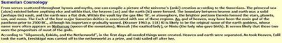
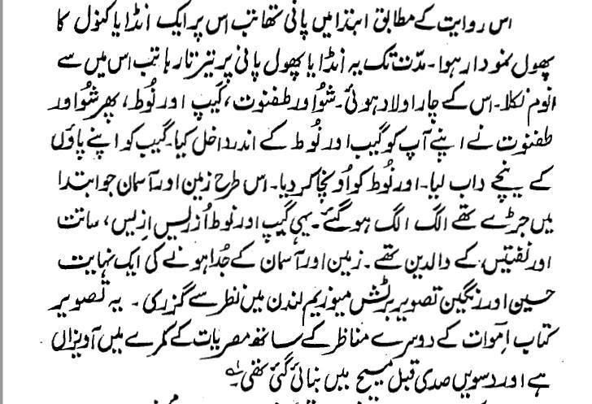

")
جدید سائنس نے بتلایا کہ یہ کائنات بگ بینگ کے نتیجے میں 13.7 ارب سال پہلے وجود میں آئی۔ جبکہ ہماری زمین تو صرف 4.6 ارب سال پہلے جا کر وجود میں آنا شروع ہوئی جبکہ پہلے سے موجود پرانے ستارے ٹوٹ پھوٹ کا شکار ہوئے اور ان سے خارج ہونے والے مادے اور گیسز وغیرہ نے مل کر زمین کی تشکیل کی۔ یعنی کائنات اور زمین کے آپس میں وجود میں آنے کے درمیان 9 ارب سال کا وقفہ ہے۔ چنانچہ:
1۔ زمین کا علیحدہ سے کوئی وجود نہ تھا۔
2۔ بلکہ زمین اس کائنات کا ہی حصہ تھی اور بعد میں اسی کائنات سے ہی وجود میں آئی۔ اور صرف زمین ہی نہیں، بلکہ تمام ستارے اور چاند اسی زمین کی طرح وجود میں آئے۔
3۔ اور کائنات اور زمین کے وجود میں آنے کے مابین 9 ارب سال کا وقفہ ہے۔
مگر قرآن کے مصنف (محمد صاحب) نے یہ دعویٰ کر دیا کہ زمین اور آسمان شروع وقت سے دو مختلف چیزوں کے طور پر وجود رکھتے تھے، مگر دو علیحدہ چیزیں ہوتے ہوئے بھی وہ باہم ملے ہوئے تھے۔ پھر اللہ نے ان دونوں کو علیحدہ کر دیا اور یوں وہ بعد میں علیحدہ ہو کر اپنی اپنی جگہ قائم ہو گئے۔
(قرآن 21:30) کیا کافروں نے نہیں دیکھا کہ آسمان اور زمین باہم جڑے ہوئے تھے۔ پھر ہم نے انھیں ایک دوسرے سے جدا کر کے علیحدہ کر دیا ۔
چنانچہ قرآن کے مصنف (یعنی محمد صاحب) کے بیان کے میں یہ سائنسی غلطیاں ہیں:
1۔ قرآن کے مصنف (یعنی محمد صاحب) کو کائنات اور آسمان کا فرق ہی نہیں پتا۔ مسلمانوں نے قرآن کی اس غلطی پر پردہ ڈالنے کے لیے دعویٰ کر دیا کہ آسمان ہی کائنات ہےجو کہ بالکل غلط دعوی ہے کیونکہ قرآن کے مطابق آسمان زمین کی طرح مادی چیز ہے جس پر انبیاء اپنی امتوں کے ساتھ رہائش پذیر ہیں۔ اور قرآن کے مطابق آسمانوں (یعنی قرآنی کائنات) میں ہماری زمین اور کھربوں ستارے شامل نہیں ہیں بلکہ یہ آسمان سے علیحدہ چیزیں ہیں اور ساتوں آسمانوں میں ان کا شمار نہیں ہوتا۔ چنانچہ مسلمانوں سے سوال یہی ہے کہ جب قرآن خود 7 آسمانوں میں زمین اور ان اربوں کھربوں ستاروں کو شامل نہیں کرتا، تو پھر آپ نے قرانی آسمانوں کو کائنات کیسے بنا دیا؟
یاد رہے کہ سائنس کے مطابق آسمان نامی شے کا سرے سے کوئی وجود ہی نہیں ہے۔ جو چیز ہمیں اوپر نیلی نظر آ رہی ہوتی ہے، وہ سورج کی روشنی ہوتی ہے جو انعکاس کی وجہ سے دن میں نیلی اور شام کو اکثر سرخ رنگ کا آسمان پیش کر رہی ہوتی ہے۔
2۔ سائنس کے مطابق بگ بینگ سے قبل کوئی "دو" مختلف چیزیں نہیں تھیں جو کہ ایک ساتھ جڑی ہوئی تھیں، اور نہ ہی بگ بینگ کے بعد کوئی "دو" چیزیں وجود میں آئیں جیسا کہ قرآن کا دعویٰ ہے، بلکہ بے تحاشہ (کھربوں) چھوٹی چھوٹی چیزیں وجود میں آئیں، مگر قرآنی دعوے کے برخلاف ان میں سے کوئی بھی زمین نامی چیز موجود نہیں تھی، بلکہ زمین تو 9 ارب سال بعد جا کر مختلف گیسوں سے مل کر بنی۔
3۔ مسلمان بہانہ بنانے کی کوشش کرتے ہیں کہ قرآن زمین اور آسمان کو singularity کے طور پر استعمال کر رہا ہے۔ جواباً عرض ہے کہ قرآن مین یہ singularity کا لفظ کہاں موجود ہے، بلکہ قرآن میں "جڑنے" کا لفظ موجود ہے، اور جڑنے کا مطلب ہمیشہ 2 مختلف چیزوں کا علیحدہ وجود رکھتے ہوئے آپس میں جڑا ہونا ہوتا ہے۔ چنانچہ دو چیزوں کو جدا کیے جانے کی شرط یہ ہوتی ہے کہ وہ دونوں پہلے سے ہی ایک ہی وقت میں وجود رکھتے ہوں۔
4۔ اور ہم کو الزام نہ دیں کہ ہم قرانی آیت کو ان معنوں میں سمجھ رہے ہیں، بلکہ پچھلے 1400 سالوں میں آنے والے اربوں مسلمانوں نے بعینہ انہی معنوں میں قرآن کی اس آیت کو سمجھا ہے۔ چنانچہ یہ اسلام معذرت خواہ ہیں جو آج اکیسویں صدی میں آ کر سائنس کی وجہ سے قرانی آیت کو گھمانے پھرانے کی ناکام کوشش کر رہے ہیں۔
قرآن کے مصنف (یعنی محمد صاحب) نے زمین و آسمان کے جڑنے اور علیحدہ ہونے کی کہانی پچھلے زمانے کے قصے کہانیوں سے لی
زمین اور آسمان کو جدا کرنے والی کہانیاں کو تو قرآن کے مصنف (محمد) نے پچھلے زمانے کی دیو مالائی کہانیوں سے نقل کیا ہے۔ مثلا زمین اور آسمان کو جدا کرنے والا قصہ گل گامیش کی کہانی سے چرایا گیا ہے۔ نیچے گل گامیش کا تراشہ دیا جا رہا ہے۔ تو اب نبی سے پہلے اس گل گامیش پر ایمانِ کامل لائیے (لنک)۔

اور مصریوں کے کتاب book of the dead سے یہ تراشہ اردو میں ہے، جو سبط حسن کی ماضی کے مزار سے لیا گیا ہے۔
"اس روایت کے مطابق ابتدا میں پانی تھا۔ تب اس پر ایک انڈایا کنول کا پھول نمودار ہوا۔ مدت تک یہ انڈایا پھول پانی پر تیرتا رہاا، تب اس میں سے انوم نکلا۔ (پھر) اس (انوم) کی آگے چار اولادیں ہوئیں جو شو اور طفنوت، گیب اور نوگ تھے۔ پھر شُو اور طفنوت نے اپنے اپ کو گیب اور نوط کے اندر داخل کیا۔ گیب کو اپنے پاؤں کے نیچے داب لیا۔ اور نوط کو اونچا کر دیا۔ اس طرح زمین اور آسمان جو ابتدا میں جڑے ہوئے تھے، الگ الگ ہو گئے۔ یہی گیب اور نوط اُزریس ازیس، ساتت اور نفتین کے والدین تھے۔ زمین اور آسمان کے جدا ہونے کی ایک نہایت حسین اور رنگین تصویر برٹش میوزیم میں نظر سے گذری۔

قرآن کے مصنف (یعنی محمد صاحب) نے زمین و آسمان کی پیدائش سے قبل "پانی" کی موجودگی بھی Sumerian قصے کہانیوں سے لی
محمد صاحب نے نہ صرف باہم ملے زمین اور آسمان کو علیحدہ کرنے کا قصہ Sumerian تہذیب سے لیا تھا، بلکہ قرآن کے مصنف نے یہ قصہ بھیSumerian تہذیب سے نقل کیا تھا کہ زمین و آسمان کی پیدائش سے قبل پانی موجود تھا۔ یہ قصہ Sumerian تہذیب کی کتابوں Gilgamesh, Enkidu, and the Netherworld میں موجود ہے (لنک)۔
چنانچہ محمد صاحب نے اس کہانی کو اللہ کے نام پر ڈھالتے ہوئے قرآن میں یوں بیان کیا:
(قرآن 11:7) وهو الذي خلق السماوات والأرض في ستة أيام وكان عرشه على الماء
ترجمہ:
اور وہی(اللہ) ہے جس نے آسمانوں اور زمین کو چھ دنوں میں پیدا کیا جبکہ اس سے پہلے اس کا عرش پانی پر تھا۔
جب مسلمانوں کو Sumerian تہذیب سے یہ چوری شدہ قصے قرآن میں موجود دکھائے جاتے ہیں، تو ان کے پاس کوئی جواب نہیں ہوتا، سوائے اس کے کہ یہ مسلمانوں کے مطابق اتفاق ہو سکتا ہے کہ Sumerian تہذیب میں یہ قصے کہانیاں پہلے سے موجود ہوں۔
لیکن حقیقت عیاں ہے کہ یہ اتفاق نہیں ہے، بلکہ یہ سرقہ (قصے کہانیوں کی چوری) ہے، جو سائنسی اعتبار سے ہمیشہ غلط تھے۔ ناممکن ہے کہ بگ بینگ سے قبل پانی کا کوئی وجود ہو جس پر اللہ اپنا عرش جما کر بیٹھ گیا ہو۔
اور جو قران کہتا ہے کہ "کیا کافروں نے نہیں دیکھا کہ زمین و آسمن جڑے ہوئے تھے ۔۔۔(قران 21:30)"، تو یہاں پر مسلسل مسلمانوں سے سوال کیا جاتا ہے کہ اللہ یہاں کافروں کا ذکر کیوں کر رہا ہے اور کافروں کا اس چیز کا علم کیسے ہو سکتا ہے کہ زمین و آسمان کیسے وجود میں آئے؟ مسلمان یہاں آئیں بائیں شائیں کرتے ہیں، لیکن جب ہم Sumerian تہذیب کے ان قصے کہانیوں کو دیکھتے ہیں تو یہاں سے ہمیں پتا چلتا ہے کہ کافروں کو اس کا علم ان پرانے قصے کہانیوں کی وجہ سے پہلے سے تھا اور اسی وجہ سے قرآن انہیں مخاطب کر کے یہ قصہ دہرا رہا ہے۔
قرآن کے مصنف (محمد صاحب) کے مطابق زمین پہلے پیدا ہوئی
صرف یہی نہیں کہ زمین اور آسمان آپس میں ملے ہوئے تھے، بلکہ قرآن کے مصنف کے مطابق پہلے "زمین" پیدا ہوئی۔ اور زمین کی پیدائش کے وقت جو بخارات اٹھے، وہ بطور دھواں آسمان بن گئے اور یہ دھویں والا آسمان اس لیے پہلے زمین سے جڑا ہوا تھا، مگر پھر اللہ نے بعد میں زمین اور آسمان کو ایک دوسرے سے جدا کر دیا۔
(سورۃ 41، آیات 9 تا 12) اے نبیؐ! اِن سے کہو، کیا تم اُس خدا کا انکار کرتے ہو اور دوسروں کو اُس کا ہمسر ٹھیراتے ہو جس نے زمین کو دو دنوں میں بنایا؟ وہی تو سارے جہان والوں کا رب ہے۔ اُس نے (زمین کو وجود میں لانے کے بعد) اوپر سے اس پر پہاڑ جما دیے اور اس میں برکتیں رکھ دیں اور اس کے اندر سب مانگنے والوں کے لیے خوراک کا سامان مہیا کر دیا یہ سب کام چار دن میں ہو گئے۔ پھر وہ آسمان کی طرف متوجہ ہوا اور وہ دھؤاں تھا پس اس کو اور زمین کو فرمایا کہ خوشی سے آؤ یا جبر سے دونوں نے کہا ہم خوشی سے آئے ہیں۔ پھر دو دن میں سات آسمان بنائے
ابن کثیر اس آیت کی تفسیر میں لکھتا ہے (لنک):
پس اس آیت سے معلوم ہوا کہ پہلے زمین بنائی گئی۔ عمارت کا قاعدہ یہی ہے کہ پہلے بنیادیں اور نیچے کا حصہ تیار کیا جاتا ہے پھر اوپر کا حصہ اور چھت بنائی جاتی ہے۔ چنانچہ کلام اللہ شریف کی ایک اور آیت میں ہے اللہ وہ ہے جس نے تمہارے لئے زمین میں جو کچھ ہے پیدا کرکے پھر آسمانوں کی طرف توجہ فرمائی اور انہیں ٹھیک سات آسمان بنا دیئے (قرآن 2:29)۔ ہاں سورۃ نازعات ( وَالْاَرْضَ بَعْدَ ذٰلِكَ دَحٰىهَا 30ۭ) 79- النازعات:30) میں پہلے آسمان کی پیدائش کا ذکر ہے پھر فرمایا ہے کہ زمین کو اس کے بعد بچھایا (دحاھا)۔ اس بچھانے سے مراد زمین (کو پیدا کرنا نہیں، بلکہ پیدا کرنے کے بعد اس) میں سے پانی چارہ نکالنا اور پہاڑوں کا گاڑنا ہے جیسے کہ اس کے بعد کا بیان ہے۔ یعنی پیدا پہلے زمین کی گئی، اس کے بعد پھر آسمان (پیدا کیا گیا) اور پھر زمین کو ٹھیک ٹھاک کیا گیا۔ لہذا دونوں آیتوں میں کوئی فرق نہیں ۔ صحیح بخاری (کتاب التفسیر۔ لنک) میں ہے کہ ایک شخص نے حضرت عبداللہ بن عباس سے پوچھا کی بعض آیتوں میں مجھے کچھ اختلاف سا نظر آتا ہے ۔۔۔(مثلاً) ایک آیت میں ہے زمین کو آسمان کے بعد بچھایا ( وَالْاَرْضَ بَعْدَ ذٰلِكَ دَحٰىهَا 30ۭ) 79- النازعات:30) دوسری آیت ( قُلْ اَؤُنَبِّئُكُمْ بِخَيْرٍ مِّنْ ذٰلِكُمْ 15ۚ) 3- آل عمران:15)، میں پہلے زمین کی پیدائش پھر آسمان کی پیدائش کا ذکر ہے۔ ۔۔۔ (ابن عباس جواب دیتے ہیں کہ) آسمان و زمین کی پیدائش کی ترتیب بیان میں کچھ اختلاف نہیں ہے۔ پہلے دو دن میں زمین بنائی گئی پھر آسمان کو دو دن میں بنایا گیا پھر زمین کی چیزیں پانی ، چارہ ، پہاڑ ، کنکر ، ریت ، جمادات ، ٹیلے وغیرہ دو دن میں پیدا کئے۔ یہی معنی لفظ دحاھا کے ہیں ۔ پس زمین کی پوری پیدائش چار دن میں ہوئی۔ اور دو دن میں آسمان۔ ۔۔۔ (زمین کی پیدائش کے بعد جب) اللہ نے آسمان کی طرف توجہ فرمائی تو وہ دھویں کی شکل میں تھا ، یعنی زمین کے پیدا کئے جانے کے وقت پانی کے جو ابخرات اٹھے تھے (وہ دھویں کی شکل میں آسمان بن گئے تھے)۔ اب دونوں سے فرمایا کہ یا تو میرے حکم کو مانو اور جو میں کہتا ہوں ہو جاؤ خوشی سے یا ناخوشی سے ، حضرت ابن عباس فرماتے ہیں مثلاً آسمانوں کو حکم ہوا کہ سورج چاند ستارے طلوع کرے زمین سے فرمایا اپنی نہریں جاری کر اپنے پھل اگا وغیرہ۔ دونوں فرمانبرداری کیلئے راضی خوشی تیار ہو گئے۔ اور عرض کیا کہ ہم مع اس تمام مخلوق کے جسے تو رچانے والا ہے تابع فرمان ہے۔
چنانچہ قرآن کے مصنف (محمد صاحب) کا پہلے زمین کی پیدائش کروا دینا، اور پھر زمین اور آسمان کو آپس میں ملوا دینا بہت بڑا سائنسی بلنڈر تھا۔ چنانچہ جدید سائنس نے آ کر اس غلط قرآنی سائنس کی مکمل ثبوتوں کے ساتھ تکذیب کر ڈالی۔
قرآن کے مصنف کا اجرام فلکی کے متعلق ناقص علم
یاد رہے کہ محمد صاحب اپنے زمانے کی سائنس کی پیروی کر رہے تھے جس کے مطابق:
1۔ زمین اور آسمان کو ہی پوری کائنات سمجھا جاتا تھا۔
2۔ وہ تمام اجرام فلکی، جو کہ آنکھوں سے دیکھے نہیں جا سکتے، ان کا نہ محمد کے معاشرے کے لوگوں کو علم تھا اور نہ محمد کو، اور اسی لیے قرآن کے منصنف کو بھی ان کا علم نہیں، اس لیے قرآن میں دور دور تک ان کا کوئی ذکر نہیں۔